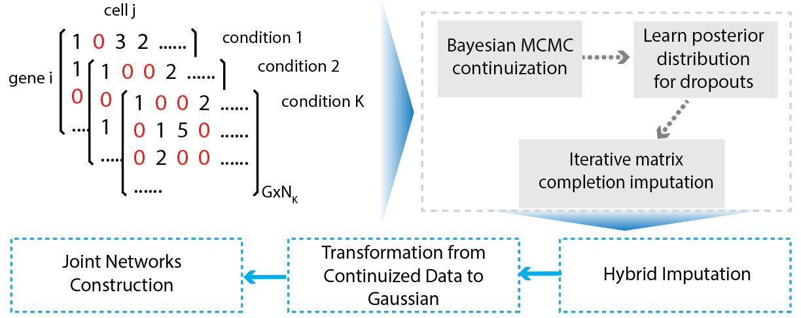

JGNsc
JGNsc.RmdJoint Gene Network Construction by Single Cell RNA Sequencing Data under Multiple Conditions
Overview of JGNsc framework:

Installation
if (!require("devtools")) {
install.packages("devtools")
}
devtools::install_github("meichendong/JGNsc")
library(JGNsc)Example – Simulation
The following code simulates raw count data from more than one conditions.
set.seed(1)
# example: the first 20 genes have different structure, the rest of genes have the same structures.
scenario = "DI20" # can change this to DD/DI100/ID
nsample = 100
nivec.list.diff <- list(nivec= c(rep(2,10), rep(20,4)),nivec2 = rep(20,5))
diffblk = list( 1:10,1)
sigma.list.1 <- generateSigmaList(nivec.list = nivec.list.diff, structure = "Diff S, Identical W", diffblk = diffblk)
# Create a list of count matrices
countlist.1 <- getCountList(sigma.list = sigma.list.1, nvec = rep(nsample,2), a3=2.5, b3=1)The network structure (simulation truth) is available at countlist.1 above. Check the details by
Run JGNsc imputation and continuization step, and the Joint Graphical Lasso (JGL) model with AIC as tuning parameter selection criterion. This may take 5 to 10 minutes.
simulation.result <- JGNsc(observed.list = observed.list, min.cell = 10, runNetwork = T)
# check the structure of the result
str(simulation.result)
# check the AIC values
library(ggplot2)
dt <- as.data.frame(simulation.result$aic.table)
ggplot(dt, aes(x=V1, y=V3, color = V2)) + geom_point() + xlab("lambda1") + ylab("AIC") + labs(color = "lambda2")Visualize the estimated partial correlation matrix. In this example, the sample size is the same as the number of genes, hence the estimated matrix is more noisy.
library(pheatmap)
# ESTIMATED
partcorr.est1.trunc <- trunc_precision(simulation.result$partcorr[[1]], threshold = 0.0001)
pheatmap(partcorr.est1.trunc, cluster_rows = F, cluster_cols = F)
# SIMULATION TRUTH
partcorr.true1 <- prec2partialcorr(countlist.1[[1]]$precision)
partcorr.true1.trunc <- trunc_precision(partcorr.true1, threshold = 0.0001)
# partcorr.true1[1:6,1:6]
pheatmap(partcorr.true1, cluster_rows = F, cluster_cols = F)Example – MB data
The data is from the paper Hovestadt et al..
The data is preprocessed by Seurat.
The processed example data is available upon request due to the data size.
The most part of example below was submitted to cluster. The running time may be long (hours).
# setwd("your/data/path")
# Seurat object
sobj <- readRDS("H0102_seuratobj_3d.rds")
# metabolism enzyme only pathway
meta2 <- read.csv("Mammalian_Metabolic_enzyme_genes.csv")Check demographic information by groups, for the gene of interest MYC:
getGENEbox(countmat = sobj@assays$RNA@counts, group = sobj$group3, gene = "MYC")MB demographics MYC boxplot
getGENEhist(countmat = sobj@assays$RNA@counts, group = sobj$group3, gene = "MYC")MB demographics MYC histogram
Create a list of raw count matrices:
MB.3cond <- getObservedList(mtx = as.matrix(sobj@assays$RNA@counts), group = sobj$group3, geneSet = c(toupper(meta2$GeneSymbol), "MYC", "OTX2"))
# the list of observed count matrices can be import as below
# MB.3cond <- readRDS("J0001_MB3cond.rds")Run JGNsc imputation and continuization step. The current version may take hours or longer if the data dimension is high. Faster algorithm is in development.
MB.3cond.continuous <- JGNsc(observed.list = MB.3cond, min.cell = 10, runNetwork = F)Tuning parameter selection by AIC, for JGL model:
res <- getJGLTuningParamResult(GauList = MB.3cond.continuous$theta.star.npn)
# transform the precision matrix to partial correlation
partcorr <- lapply(res$jgl.res, prec2partialcorr)
# you can read in the calculated partial correlation matrices for the visualization steps
# partcorr <- readRDS("J0001_MB_partcorr.rds")Gene Set Enrichment analysis
test <- Map2Pathways(partcorr.list = partcorr,
conditions = unique(sobj$group3),
GeneInterest = "MYC",
pathwayRef = meta2,
pathwayRef_geneVariable = "GeneSymbol",
pathwayRef_pathVariable = "SigmaMiniMap.Term",
threshold =0)
GSEA.table <- test$GSEA.tableVisualize joint networks for MYC connected genes
gene1 = "MYC"
gconnect = c(toupper(test$cond.connect[[1]]$GeneSymbol), gene1)
highlight = gconnect %in% c(gene1)
net1 = plot_onenet(partcorr[[1]][gconnect,gconnect], gname = unique(sobj$group3)[1], circlenet = T, nodecolor = c("orange","lightblue")[highlight+1], family.vec = highlight)
gconnect = c(toupper(test$cond.connect[[2]]$GeneSymbol), gene1)
highlight = gconnect %in% c(gene1)
net2 = plot_onenet(partcorr[[2]][gconnect,gconnect], gname = unique(sobj$group3)[2], circlenet = T, nodecolor = c("orange","lightblue")[highlight+1], family.vec = highlight)
gconnect = c(toupper(test$cond.connect[[3]]$GeneSymbol), gene1)
highlight = gconnect %in% c(gene1)
net3 = plot_onenet(partcorr[[3]][gconnect,gconnect], gname = unique(sobj$group3)[3], circlenet = T, nodecolor = c("orange","lightblue")[highlight+1], family.vec = highlight)
library(cowplot)
plot_grid(net3, net1, net2, ncol = 3)
MB Joint Networks
Example – GBM data
The data is from the paper Neftel et al.. The processed example data is available upon request due to the data size.
sobj <- readRDS("N0102_seuratobj_3d_malignant_adult.rds") The workflow is similar to the MB data example. Below we provide the list of count matrices of the four subtypes, and the list of estimated partial correlation matrices of the GBM data.